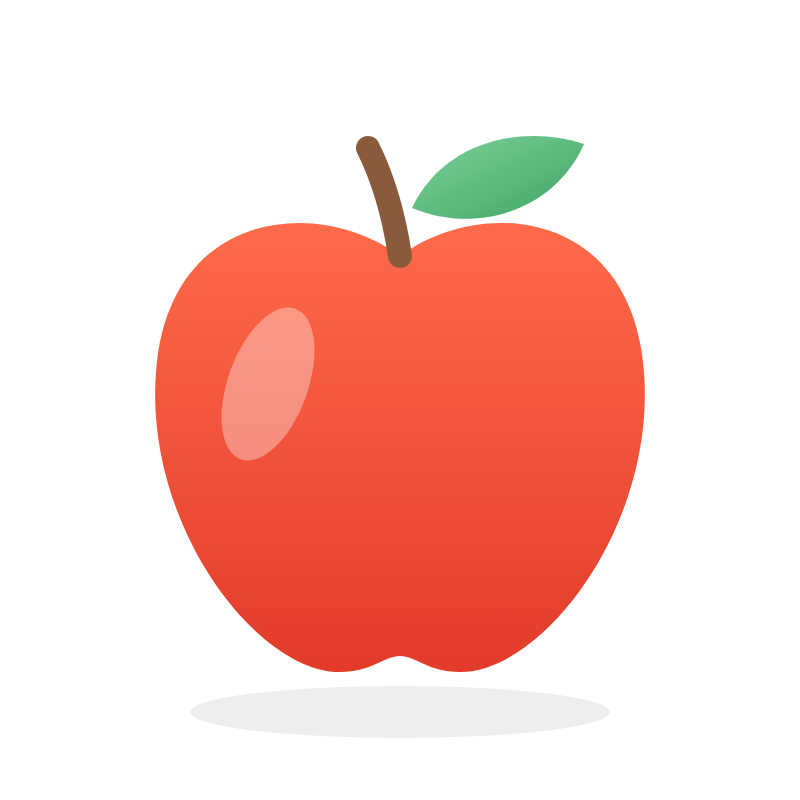

BASICS
冠詞とは？
名詞の前に置く a / an / the のこと

a book

an apple
the sun
役割名詞を「どんな名詞として話しているか」を、小さく示してくれる
BASICS
名詞の前に置く a / an / the のこと
a book

an apple
the sun
役割名詞を「どんな名詞として話しているか」を、小さく示してくれる
POINT
She is a nurse.
彼女は看護師です。

He is an engineer.
彼はエンジニアです。

A or AN ?
ルール次に来る単語の「音」で決まる
子音の音から始まる（母音以外の音）
a book母音の音から始まる（ア・イ・ウ・エ・オ に近い音）
 an egg
an eggTHE ・ EXAMPLES

Please close the door.
そのドアを閉めてください。
その場にいる人たちが
どのドアか分かっている

Where is the bathroom?
トイレはどこですか？
その場所にあるトイレを
指している
The sun is bright today.
今日は太陽がまぶしいです。
太陽は、どれのことか
特定できる
COMPARE
I saw a dog.
犬を1匹見ました。
The dog was cute.
その犬はかわいかったです。
I want to buy a book.
本を1冊買いたいです。
→ どの本かは、まだ決まっていない
I want to buy the book.
その本を買いたいです。
→ 話し手と聞き手が、どの本か分かっている
NEXT ・ 次回予告
そこで大切なのが…
数えられる名詞
可算名詞
数えられない名詞
不可算名詞

NEXT ・ 次回予告
1つ、2つ、3つ…と数えられる名詞
book
one book
two books
apple
one apple
two apples
dog
one dog
two dogs
student

one student
two students
1つだけならa / an を使える： a book ／ an apple ／ a dog
NEXT ・ 次回予告
ルール1つ、2つ…とそのまま数えられない → a / an は使えない
water
水
× a water
love
愛
× a love
happiness
幸せ
× a happiness